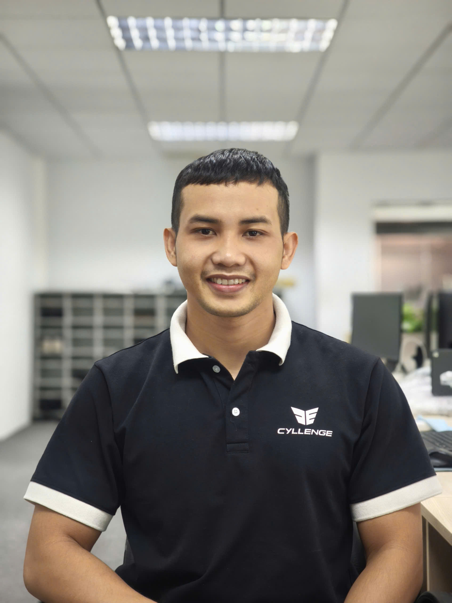

Fullstack Developer | React • Vue • Laravel
Adaptable & Continuous Learner in Modern Web Technologies
Web Developer with 5+ years of experience specializing in React and Vue (Nuxt), with a solid background in PHP/Laravel. I focus on building high-performance, SEO-friendly web applications and maintainable code.
useSearch) and optimized data fetching patterns using TanStack
Query.
Achievement: Successfully established a standardized React 19 ecosystem for the company, improving development velocity and reducing code duplication through a centralized Core Foundation and Class-based Service architecture.
Achievement: Optimized user experience with non-blocking file uploads, implemented a Dynamic Form Engine to reduce development time, improved SEO rankings via Nuxt, and consistently met all project deadlines.
Achievement: Successfully modernized the technology stack by migrating to Vue 3 and enhanced system reliability by implementing a robust Message Queue system managed by Supervisor.
Achievement: Improved user session security and UI interactivity by implementing cross-tab state synchronization via Vuex and building highly interactive, draggable components.